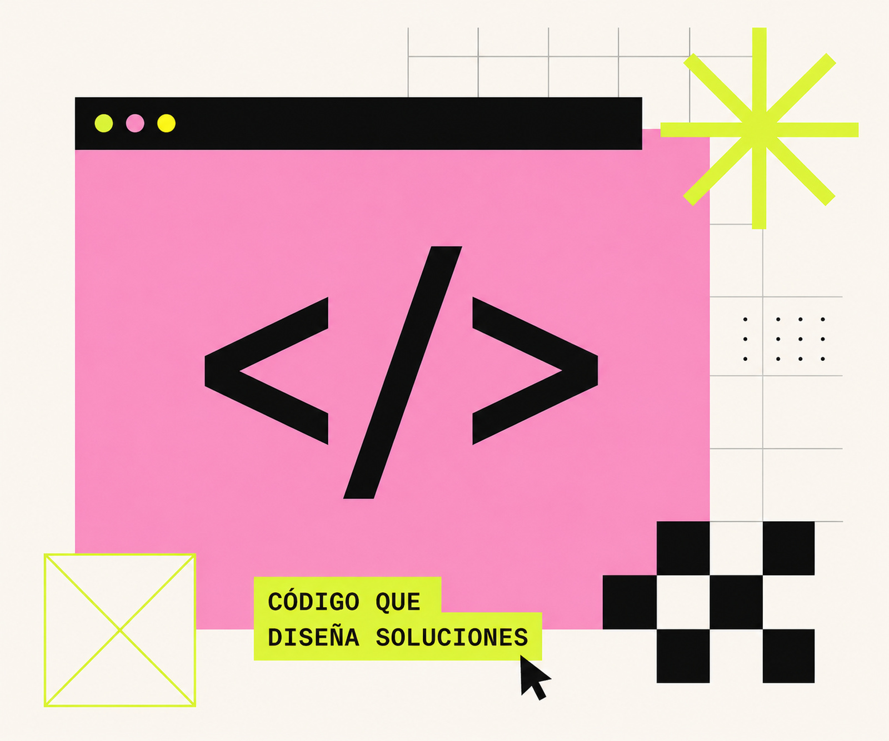

PORTFOLIO
MARTINA TRILLINI
FULL STACK DEVELOPER
& UX/UI DESIGNER
Diseño experiencias digitales y desarrollo el sistema. Del wireframe al deploy, sin intermediarios.
San Miguel, Buenos Aires
EXPERIENCIA
DEVELOPER
PHP · MySQL
JavaScript · React
UX/UI DESIGN
Figma · Wireframes
User Research
DESIGN
Photoshop
Illustrator
HERRAMIENTAS
Git · GitHub
VS Code · Postman
SOBRE MÍ
Combino pensamiento lógico y sensibilidad visual. Me enfoco en entender el problema, diseñar la solución y construir productos digitales funcionales, usables y escalables.
Mi perfil combina desarrollo Full Stack con UX/UI: puedo analizar una necesidad, pensar el flujo, diseñar la interfaz y llevarla a una implementación real.
- DISEÑO CON PROPÓSITO
- CÓDIGO QUE FUNCIONA
PROYECTOS
E-COMMERCE · PERFUMERÍA
NÜVE
Perfumería de autor con catálogo curado y carrito propio, más un panel de administración a medida: pedidos, productos, envíos y mails automáticos de confirmación de compra.
Ver sitio NÜVE (se abre en una pestaña nueva)


E-COMMERCE · WELLNESS
Kabodhi
Tienda de hongos adaptógenos y suplementos naturales. Catálogo dinámico, carrito, carrusel de campañas y panel de gestión propio.
Ver sitio Kabodhi (se abre en una pestaña nueva)
E-COMMERCE
Griflor
Tienda online con catálogo de productos, filtros, galería y diseño responsive pensado desde la experiencia de compra.
Ver proyecto


STACK
FRONTEND
- HTML
- CSS
- JavaScript
- React
BACKEND
- PHP
- MySQL
- REST API
UI / UX
- Figma
- Wireframes
- Prototipos
- User Research
TOOLS
- Git
- GitHub
- VS Code
- Postman
HABLEMOS
¿Tenés un proyecto, una idea o una propuesta? Estoy disponible para nuevos desafíos.
Escribime